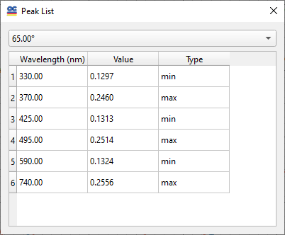
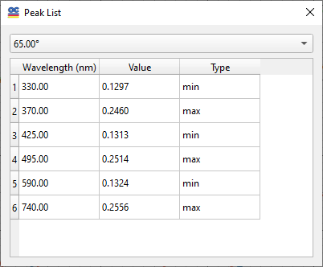

Model Peak List
A model peak list of the theoretical spectral characteristics can be obtained by using the right-click menu in the corresponding Fitting window.

The obtained list can be copied to the clipboard using the Copy command.
A model peak list of the theoretical spectral characteristics can be obtained by using the right-click menu in the corresponding Fitting window.

The obtained list can be copied to the clipboard using the Copy command.